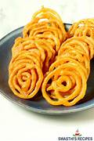

Gulab Jamun
Ingredients:
- Sugar 300gram
- Wheat 500gram
- Milk 100ml
- Oil 10ml
Steps to Follow:
- Boil the oil.
- Make sugar syrup by boiling sugar into 500ml water.
- Make dough for the gulabjamun by mixing wheat and milk and make round balls.
- Fry the balls in hot oil and pour them in sugar syrup.

Berfi
Ingredients:
- Sugar 300gram
- Mawa 500gram
- Milk 100ml
- ghee 10ml
Steps to Follow:
- Boil the milk.
- Add Mawa into the milk and stir it continously..
- Add sugar into the milk and stir it till it gets thicker.
- Now, turn the flame off and let it cool and then cut it into pieces and serve it.

Burger
Ingredients:
- 2 pieces of Bun
- Cheese
- aloo tiki
- vegetables
Steps to Follow:
- Grilled the buns.
- Put aloo tikki inside those buns.
- Then add a slice of cheese over it.
- At last add some vegetables of your choice and mayonise and it is ready to serve.

Jalebi
Ingredients:
- Sugar 300gram
- Besan 500gram
- Water 100ml
- ghee 10ml
Steps to Follow:
- Boil the water and add some sugar into it to make sugar syrup.
- Make a better of besan and pour it into hot oil using container.
- Fry the batter in the oil in round direction.
- Then pour those jalebis into sugar syrup and then serve them.
